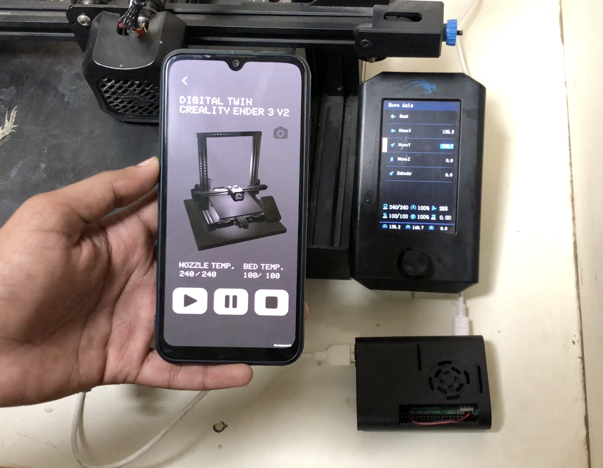
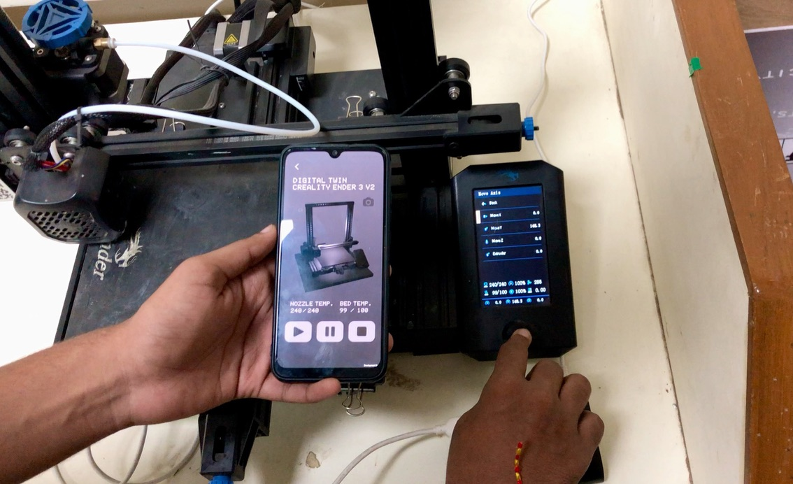
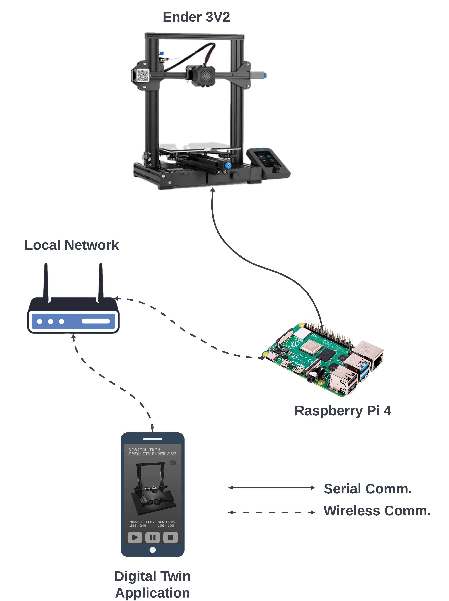
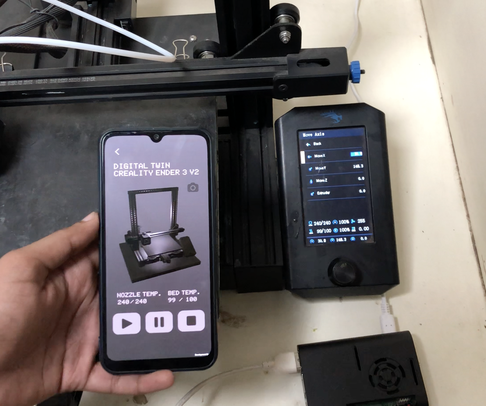
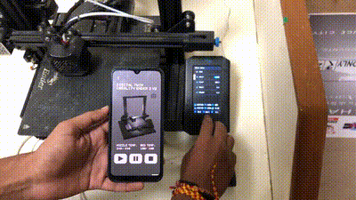

Unity-based Digital Twin for 3D printers.
A 3D model of a working printer that stays in sync in real time, driven by a Raspberry Pi 4, a Flask server, M114 G-code streaming, and a custom C# visualizer in Unity.

Independent research
Additive manufacturing
Flask · Raspberry Pi 4B · M114
The brief.
This was a research project I called "Unity-Based Digital Twin for 3D Printers." The question was simple: can a digital twin track a 3D printer well enough to be useful? My goal was a Unity application that holds a live, synchronized model of a real printer.
I used a Raspberry Pi 4 and a Flask server on the local network to keep updating the printer's XYZ coordinates in its virtual copy. M114 G-code gave me the positional data, and a C# script in Unity drew it. The interesting problems were network latency and keeping the two sides in sync. The end result tracks the printer's motion closely enough to support remote monitoring, diagnosis, and eventually control.
Methodology.
Getting accurate data in real time came down to two things: the Flask server moving data cleanly, and the right G-codes to read the printer's motion.
- I wrote two API endpoints, one for position and one for temperature, so the data arrived accurate and on time.
- The Unity app was the front end, turning the live data into a real-time 3D model of the print.
- I set up the Raspberry Pi 4B and got a stable connection to the printer.
- A custom C# script wired the API endpoints into Unity so the virtual model updated as the printer moved.
Results.
I tested it hard, and the physical printer and its twin stayed lined up. The model tracked both the motion and the environment, which made it a usable tool for watching and controlling a print in real time.
That opens a door to predictive maintenance and process optimization in 3D printing. Next steps could add machine-learning models for prediction and extend the same approach to other machines, which is where this gets interesting for smart manufacturing.
Build artifacts.



